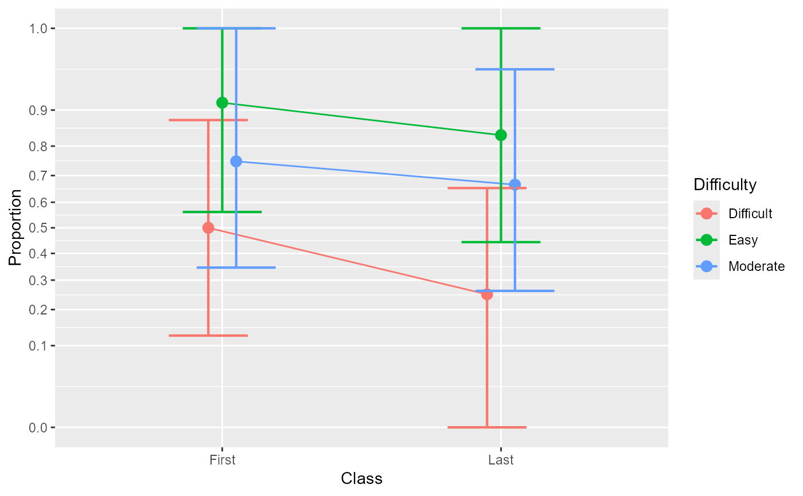

posthocProportions: post-hoc analysis of proportions.
Source:R/ANOPA-posthocProportions.R
posthocProportions.RdThe function posthocProportions() performs post-hoc analyses
of proportions after an omnibus analysis has been obtained with anopa()
according to the ANOPA framework. It is based on the tukey HSD test.
See Laurencelle and Cousineau (2023)
for more.
posthocProportions(w, formula)Arguments
- w
An ANOPA object obtained from
anopa();- formula
A formula which indicates what post-hocs to analyze. only one simple effect formula at a time can be analyzed. The formula is given using a vertical bar, e.g., " ~ factorA | factorB " to obtain the effect of Factor A within every level of the Factor B.
Value
a model fit of the simple effect.
Details
posthocProportions() computes expected marginal proportions and
analyzes the hypothesis of equal proportion.
The sum of the $F$s of the simple effects are equal to the
interaction and main effect $F$s, as this is an additive decomposition
of the effects.
References
Laurencelle L, Cousineau D (2023). “Analysis of frequency tables: The ANOFA framework.” The Quantitative Methods for Psychology, 19, 173--193. doi:10.20982/tqmp.19.2.p173 .
Examples
# -- FIRST EXAMPLE --
# This is a basic example using a two-factors design with the factors between
# subjects. Ficticious data present the number of success according
# to Class (three levels) and Difficulty (two levels) for 6 possible cells
# and 72 observations in total (equal cell sizes of 12 participants in each group).
twoWayExample
#> Class Difficulty success total
#> 1 First Easy 11 12
#> 2 First Moderate 9 12
#> 3 First Difficult 6 12
#> 4 Last Easy 10 12
#> 5 Last Moderate 8 12
#> 6 Last Difficult 3 12
# As seen the data are provided in a compiled format (one line per group).
# Performs the omnibus analysis first (mandatory):
w <- anopa( {success;total} ~ Class * Difficulty, twoWayExample)
summary(w)
#> MS df F pvalue correction Fcorr pvalcorr
#> Class 0.032569 1 1.628455 0.201917 1.013889 1.606147 0.205034
#> Difficulty 0.136787 2 6.839333 0.001071 1.027778 6.654486 0.001288
#> Class:Difficulty 0.003660 2 0.183006 0.832763 1.243056 0.147223 0.863102
#> Error(between) 0.020000 Inf
# The results shows an important interaction. You can visualize the data
# using anopaPlot:
anopaPlot(w)

# The interaction is overadditive, with a small differences between Difficulty
# levels in the first class, but important differences between Difficulty for
# the last class.
# Let's execute the post-hoc tests
e <- posthocProportions(w, ~ Difficulty | Class )
#> [1] "Not yet programmed..."
#summary(e)
# As a check, you can verify that the $F$s are decomposed additively
#sum(e$omnibus[,1])
w$omnibus[3,1]+w$omnibus[4,1]
#> [1] 0.02366012
# -- SECOND EXAMPLE --
# Example using the Arrington et al. (2002) data, a 3 x 4 x 2 design involving
# Location (3 levels), Trophism (4 levels) and Diel (2 levels), all between subject.
ArringtonEtAl2002
#> Location Trophism Diel s n
#> 1 Africa Detritivore Diurnal 16 217
#> 2 Africa Invertivore Diurnal 76 498
#> 3 Africa Invertivore Nocturnal 55 430
#> 4 Africa Omnivore Diurnal 2 87
#> 5 Africa Piscivore Diurnal 673 989
#> 6 Africa Piscivore Nocturnal 221 525
#> 7 Central/South America Detritivore Diurnal 68 1589
#> 8 Central/South America Detritivore Nocturnal 9 318
#> 9 Central/South America Invertivore Diurnal 706 7452
#> 10 Central/South America Invertivore Nocturnal 486 2101
#> 11 Central/South America Omnivore Diurnal 293 6496
#> 12 Central/South America Omnivore Nocturnal 82 203
#> 13 Central/South America Piscivore Diurnal 1275 5226
#> 14 Central/South America Piscivore Nocturnal 109 824
#> 15 North America Detritivore Diurnal 142 1741
#> 16 North America Invertivore Diurnal 525 3368
#> 17 North America Invertivore Nocturnal 231 1539
#> 18 North America Omnivore Diurnal 210 1843
#> 19 North America Omnivore Nocturnal 7 38
#> 20 North America Piscivore Diurnal 536 1289
#> 21 North America Piscivore Nocturnal 19 102
# first, we perform the omnibus analysis (mandatory):
w <- anopa( {s;n} ~ Location * Trophism * Diel, ArringtonEtAl2002)
#> ANOPA::fyi(1): Combination of cells missing. Adding:
#> Location Trophism Diel s n
#> Africa Detritivore Nocturnal 0 0
#> Africa Omnivore Nocturnal 0 0
#> North America Detritivore Nocturnal 0 0
#> Warning: ANOPA::warning(1): Some cells have zero over zero data. Imputing...
summary(w)
#> MS df F pvalue correction Fcorr
#> Location 0.027449 2 0.961802 0.382203 1.000112 0.961694
#> Trophism 0.095656 3 3.351781 0.018102 1.000115 3.351396
#> Diel 0.029715 1 1.041227 0.307536 1.000049 1.041176
#> Location:Trophism 0.029485 6 1.033146 0.401285 1.013842 1.019041
#> Location:Diel 0.005277 2 0.184900 0.831187 1.010164 0.183040
#> Trophism:Diel 0.073769 3 2.584868 0.051365 1.012197 2.553721
#> Location:Trophism:Diel 0.011297 6 0.395837 0.882184 1.055660 0.374967
#> Error(between) 0.028539 Inf
#> pvalcorr
#> Location 0.382245
#> Trophism 0.018111
#> Diel 0.307548
#> Location:Trophism 0.410515
#> Location:Diel 0.832735
#> Trophism:Diel 0.053559
#> Location:Trophism:Diel 0.895351
#> Error(between)
# There is a near-significant interaction of Trophism * Diel (if we consider
# the unadjusted p value, but you really should consider the adjusted p value...).
# If you generate the plot of the four factors, we don't see much:
# anopaPlot(w)
#... but with a plot specifically of the interaction helps:
anopaPlot(w, ~ Trophism * Diel )
 # it seems that the most important difference is for omnivorous fishes
# (keep in mind that there were missing cells that were imputed but there does not
# exist to our knowledge agreed-upon common practices on how to impute proportions...
# Are you looking for a thesis topic?).
# Let's analyse the simple effect of Tropism for every levels of Diel and Location
e <- posthocProportions(w, ~ Tropism | Diel )
#> [1] "Not yet programmed..."
#summary(e)
# Again, as a check, you can verify that the $F$s are decomposed additively
w$omnibus[4,1]+w$omnibus[7,1] # B + B:C
#> [1] 0.04078145
#sum(e$omnibus[,1])
# You can ask easier outputs with
summarize(w) # or summary(w) for the ANOPA table only
#> MS df F pvalue correction Fcorr
#> Location 0.027449 2 0.961802 0.382203 1.000112 0.961694
#> Trophism 0.095656 3 3.351781 0.018102 1.000115 3.351396
#> Diel 0.029715 1 1.041227 0.307536 1.000049 1.041176
#> Location:Trophism 0.029485 6 1.033146 0.401285 1.013842 1.019041
#> Location:Diel 0.005277 2 0.184900 0.831187 1.010164 0.183040
#> Trophism:Diel 0.073769 3 2.584868 0.051365 1.012197 2.553721
#> Location:Trophism:Diel 0.011297 6 0.395837 0.882184 1.055660 0.374967
#> Error(between) 0.028539 Inf
#> pvalcorr
#> Location 0.382245
#> Trophism 0.018111
#> Diel 0.307548
#> Location:Trophism 0.410515
#> Location:Diel 0.832735
#> Trophism:Diel 0.053559
#> Location:Trophism:Diel 0.895351
#> Error(between)
corrected(w) # or uncorrected(w) for an abbreviated ANOPA table
#> MS df F correction Fcorr pvalcorr
#> Location 0.027449 2 0.961802 1.000112 0.961694 0.382245
#> Trophism 0.095656 3 3.351781 1.000115 3.351396 0.018111
#> Diel 0.029715 1 1.041227 1.000049 1.041176 0.307548
#> Location:Trophism 0.029485 6 1.033146 1.013842 1.019041 0.410515
#> Location:Diel 0.005277 2 0.184900 1.010164 0.183040 0.832735
#> Trophism:Diel 0.073769 3 2.584868 1.012197 2.553721 0.053559
#> Location:Trophism:Diel 0.011297 6 0.395837 1.055660 0.374967 0.895351
#> Error(between) 0.028539 Inf
explain(w) # for a human-readable ouptut ((pending))
#> [1] "method explain not yet done..."
# it seems that the most important difference is for omnivorous fishes
# (keep in mind that there were missing cells that were imputed but there does not
# exist to our knowledge agreed-upon common practices on how to impute proportions...
# Are you looking for a thesis topic?).
# Let's analyse the simple effect of Tropism for every levels of Diel and Location
e <- posthocProportions(w, ~ Tropism | Diel )
#> [1] "Not yet programmed..."
#summary(e)
# Again, as a check, you can verify that the $F$s are decomposed additively
w$omnibus[4,1]+w$omnibus[7,1] # B + B:C
#> [1] 0.04078145
#sum(e$omnibus[,1])
# You can ask easier outputs with
summarize(w) # or summary(w) for the ANOPA table only
#> MS df F pvalue correction Fcorr
#> Location 0.027449 2 0.961802 0.382203 1.000112 0.961694
#> Trophism 0.095656 3 3.351781 0.018102 1.000115 3.351396
#> Diel 0.029715 1 1.041227 0.307536 1.000049 1.041176
#> Location:Trophism 0.029485 6 1.033146 0.401285 1.013842 1.019041
#> Location:Diel 0.005277 2 0.184900 0.831187 1.010164 0.183040
#> Trophism:Diel 0.073769 3 2.584868 0.051365 1.012197 2.553721
#> Location:Trophism:Diel 0.011297 6 0.395837 0.882184 1.055660 0.374967
#> Error(between) 0.028539 Inf
#> pvalcorr
#> Location 0.382245
#> Trophism 0.018111
#> Diel 0.307548
#> Location:Trophism 0.410515
#> Location:Diel 0.832735
#> Trophism:Diel 0.053559
#> Location:Trophism:Diel 0.895351
#> Error(between)
corrected(w) # or uncorrected(w) for an abbreviated ANOPA table
#> MS df F correction Fcorr pvalcorr
#> Location 0.027449 2 0.961802 1.000112 0.961694 0.382245
#> Trophism 0.095656 3 3.351781 1.000115 3.351396 0.018111
#> Diel 0.029715 1 1.041227 1.000049 1.041176 0.307548
#> Location:Trophism 0.029485 6 1.033146 1.013842 1.019041 0.410515
#> Location:Diel 0.005277 2 0.184900 1.010164 0.183040 0.832735
#> Trophism:Diel 0.073769 3 2.584868 1.012197 2.553721 0.053559
#> Location:Trophism:Diel 0.011297 6 0.395837 1.055660 0.374967 0.895351
#> Error(between) 0.028539 Inf
explain(w) # for a human-readable ouptut ((pending))
#> [1] "method explain not yet done..."